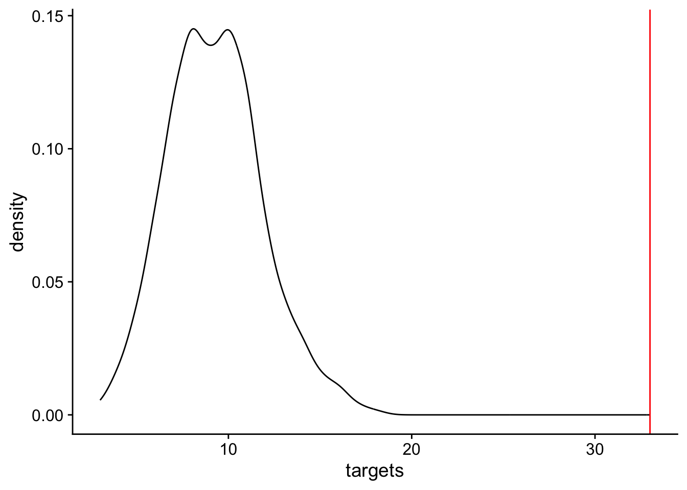

-- Attaching core tidyverse packages ------------------------ tidyverse 2.0.0 --
v dplyr 1.1.3 v readr 2.1.4
v forcats 1.0.0 v stringr 1.5.0
v ggplot2 3.4.3 v tibble 3.2.1
v lubridate 1.9.2 v tidyr 1.3.0
v purrr 1.0.2
-- Conflicts ------------------------------------------ tidyverse_conflicts() --
x dplyr::filter() masks stats::filter()
x dplyr::lag() masks stats::lag()
i Use the conflicted package (<http://conflicted.r-lib.org/>) to force all conflicts to become errors
Attaching package: 'rstatix'
The following object is masked from 'package:stats':
filter
Attaching package: 'janitor'
The following object is masked from 'package:rstatix':
make_clean_names
The following objects are masked from 'package:stats':
chisq.test, fisher.test
here() starts at /Users/jayhesselberth/devel/rnabioco/molb-7950
Attaching package: 'cowplot'
The following object is masked from 'package:lubridate':
stampProblem Set Stats Bootcamp - class 15
Dealing with big data
ang <- read_csv(here("data/bootcamp/edger.csv.gz")) |>
clean_names() |>
filter(fdr < 0.05) |>
select(log_fc_time0_25:log_fc_time8) |>
as.matrix()Rows: 17942 Columns: 17
-- Column specification --------------------------------------------------------
Delimiter: ","
chr (1): gene
dbl (16): FDR, maxabsfc, logFC.Time0.25, logFC.Time0.5, logFC.Time0.75, logF...
i Use `spec()` to retrieve the full column specification for this data.
i Specify the column types or set `show_col_types = FALSE` to quiet this message.Warning in FUN(X[[i]], ...): unable to translate '<U+00C4>' to native encodingWarning in FUN(X[[i]], ...): unable to translate '<U+00D6>' to native encodingWarning in FUN(X[[i]], ...): unable to translate '<U+00DC>' to native encodingWarning in FUN(X[[i]], ...): unable to translate '<U+00E4>' to native encodingWarning in FUN(X[[i]], ...): unable to translate '<U+00F6>' to native encodingWarning in FUN(X[[i]], ...): unable to translate '<U+00FC>' to native encodingWarning in FUN(X[[i]], ...): unable to translate '<U+00DF>' to native encodingWarning in FUN(X[[i]], ...): unable to translate '<U+00C6>' to native encodingWarning in FUN(X[[i]], ...): unable to translate '<U+00E6>' to native encodingWarning in FUN(X[[i]], ...): unable to translate '<U+00D8>' to native encodingWarning in FUN(X[[i]], ...): unable to translate '<U+00F8>' to native encodingWarning in FUN(X[[i]], ...): unable to translate '<U+00C5>' to native encodingWarning in FUN(X[[i]], ...): unable to translate '<U+00E5>' to native encodingProblem # 1
Make sure to run the chunk above. The data represent the avg fold change in gene expression for an angiotensin II time course (.25, .5, .75, 1, 1.5, 2, 3, 4, 6, 8, 24 hrs) compared to unstimulated.
correlation
Create hierarchical clustering heatmap of pairwise pearson correlation coefficients. And provide 1-2 observations.
# scale
ang <- t(scale(t(ang)))
# pairwise pearson correlation
p_ang <- cor(ang, method = "pearson")
# make heatmap
pheatmap(
mat = p_ang,
clustering_distance_rows = "euclidean",
clustering_distance_cols = "euclidean",
clustering_method = "ward.D2"
)
Timepoints close to each other tend to correlate strongly with each other. The 4,6, and 8 hr time points are the most different from all others.
PCA
Perform PCA and visualize PC1 vs PC2.Provide 1-2 observations.
# pca
pc_ang <- prcomp(ang)
# gather info from summary
pca_data_info <- summary(pc_ang)$importance |> as.data.frame()
pca_data_info <- round(x = pca_data_info, digits = 3)
# we make a dataframe out of the rotations and will use this to plot
pca_plot_data <- pc_ang$rotation |>
as.data.frame() |>
rownames_to_column(var = "ID")
# plot
ggplot(data = pca_plot_data, mapping = aes(x = PC1, y = PC2, color = ID)) +
geom_point() +
xlab(paste("PC1, %", 100 * pca_data_info["Proportion of Variance", "PC1"])) +
ylab(paste("PC2, %", 100 * pca_data_info["Proportion of Variance", "PC2"])) +
ggtitle("PCA for angII timecourse") +
theme_cowplot()
There is a a circular patter that seems to correspond to the timepoints. Interestingly, 24 appears to group back with 0.25 indicating the system is resetting w/respect to RNA levels.
Calculate the empirical p-value of the cluster most enriched for DUX4 targets by sampling
In order to do this, you will need to:
- Identify which cluster is the most enriched for DUX4 targets.
- Determine how many genes are in the cluster. You will need to know this to figure out how many genes to sample from the whole data set.
- Determine how many of the genes in the cluster are DUX4 targets. This is the metric that you are interested in comparing between the null distribution and your observation.
- Generate 1000 random sample of the proper size from all genes and find out how many of them are DUX4 targets.
- Visualize the distribution of DUX4 targets in these 1000 random (your null distribution) and overlay the number of DUX4 targets you observed in the cluster that was most enriched for DUX4 targets.
# read in data
cd <- read_tsv(here("data", "dux4_clustering_results.csv.gz"))Rows: 10566 Columns: 15
-- Column specification --------------------------------------------------------
Delimiter: "\t"
chr (2): gene_symbol, target
dbl (13): hour00_rep1, hour00_rep2, hour00_rep3, hour04_rep1, hour04_rep2, h...
i Use `spec()` to retrieve the full column specification for this data.
i Specify the column types or set `show_col_types = FALSE` to quiet this message.# how many genes are in cluster 5?
c5 <- cd |>
filter(Cluster == "5") |>
nrow()
# how many dux targets are in cluster 5?
c5t <- cd |>
filter(Cluster == "5" & target == "target") |>
nrow()
sampled_targets <- vector()
for (i in 1:1000) {
sampled_targets[i] <- sample_n(tbl = cd, size = c5) |>
group_by(target) |>
tally() |>
# need this so all groups have at least 1.
mutate(n = n + 1) |>
filter(target == "target") |>
pull(n)
}
n <- tibble(
targets = sampled_targets,
type = "null"
)
n |>
arrange(-sampled_targets) |>
top_n(10)Selecting by type# A tibble: 1,000 x 2
targets type
<dbl> <chr>
1 18 null
2 18 null
3 17 null
4 17 null
5 17 null
6 17 null
7 16 null
8 16 null
9 16 null
10 16 null
# i 990 more rowsggplot(data = n, aes(x = targets)) +
geom_density() +
geom_vline(xintercept = c5t, color = "red") +
theme_cowplot()
What is the p-value?
p < 0.001
What is your interpretation?
The null hypothesis that the number of DUX4 targets in c5t can be explained by chance - IS NOT WELL SUPPORTED.
The number of DUX4 targets in c5t CANNOT be explained by chance.